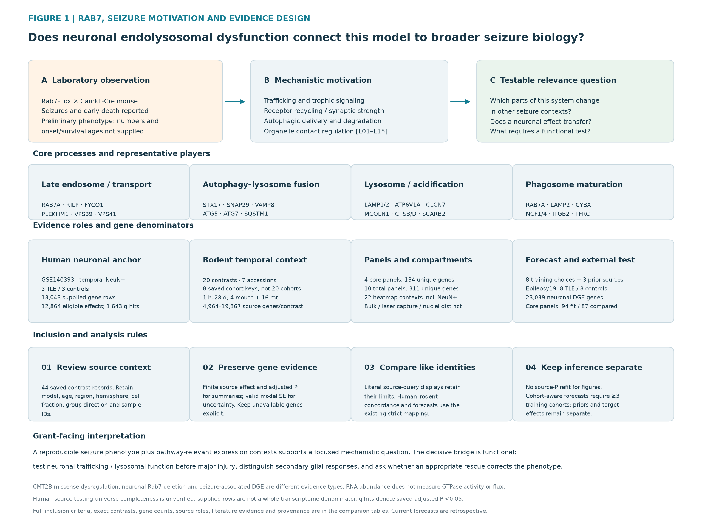

🔍 ZoomFigure 1 • Study Architecture
Study Motivation and Traceable Evidence Design
Connects the motivating Rab7 conditional mouse observations with the source study inventory, human neuronal reference, predefined mechanistic panels, rodent contexts, gene-matched concordance, and retrospective forecasting. Contrast counts do not represent independent cohorts; bulk/regional and neuronal preparations retain distinct interpretations.